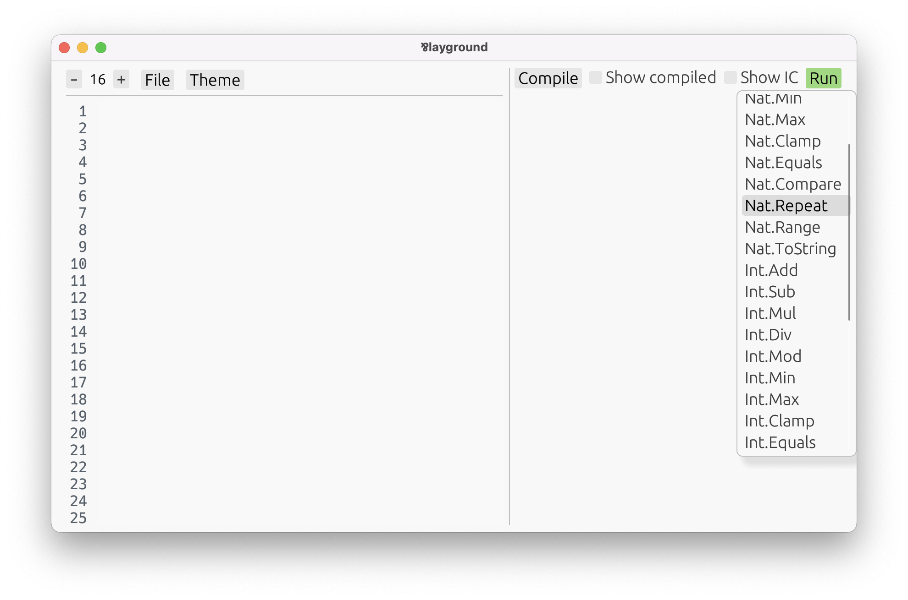

Primitive Types
Before taking a stroll in the diverse garden of Par’s types, let’s stop by the most basic ones: the primitives.
At the moment, Par has six primitive types:
Int— Integers, positive and negative whole numbers, arbitrary size.Nat— Natural numbers, starting from zero, arbitrary size. They are a subtype ofInt.String— UTF-8 encoded sequence of Unicode characters. They are a subtype ofBytes.Char— Singular Unicode character. They are a subtype ofString.Byte— Singular data unit that consists of eight bits. They are a subtype ofBytes.Bytes— Contiguous-in-memory sequence of bytes.
There’s a significant distinction between primitives and all other types in Par.
The thing is, Par has a fully structural type system. All custom type definitions are just aliases — there is no way to create opaque types. (But, encapsulation is perfectly possible.)
Primitives are different in that they are opaque. They are magical types, distinct from others, that are operated on using magical built-in functions. This is necessary to achieve their efficient representation.
Primitives are manipulated using magical built-in functions.
To find the list of all built-in functions:
- Open the playground.
$ par-lang playground - Press Compile, and Run. Scroll the list that pops up. 
Alternatively, the Built-In Definitions chapter contains all built-in definitions available in the language.
To figure out the type of a built-in function:
- Assigning it to your own
def, such as:
Par knows the type ofdef Examine = Int.ToStringInt.String, so it will infer it forExamineas well. - Press Compile.
- Move the cursor to the definition. The playground will display the type on the right,
in green.

The type [Int] String is a function from Int to String. We will cover
functions and other types in detail later. Despite that, we’ll still play with
some built-in functions in this section. All you need to know is that
the square brackets enclose function arguments, and the result type follows. For example:
[Int, Int] Intis a function from twoInts to anInt.[Int, Nat, Nat] Natis a function from oneIntand twoNats to aNat.
The current set of built-in functions is very minimal. They’re just enough to be able to write more useful functions yourself, but they’re nowhere close to a standard library. For example, there are no functions for analyzing strings, aside from
String.Reader, which is flexible enough to implement all you’d need. You just need to do it yourself.Keep in mind that Par is early in development. It’s bringing an innovative paradigm, which we’re still figuring out how to use best. Creating an expansive standard library would be premature before we understand what’s actually going on here.
Now, let’s take a look at the primitives!
Int
Integers are arbitrarily sized whole numbers, positive or negative.
Their literals consist of digits, optionally prefixed with - or +, and may include underscores
for readability.
def Num1: Int = 7
def Num2: Int = -123_456_789
The type annotations are not needed:
def Num3 = 42
def Num4 = -2202
Without annotations, Num3 actually gets inferred as Nat. But, since Nat is a
subtype of Int, it can be treated as an Int too.
Built-in functions are used for arithmetic operations. For example:
def Num5 = Int.Add(3, 4) // = 7
def Num6 = Int.Mul(3, 4) // = 12
Go ahead and explore more of them in the playground!
Nat
Natural numbers are just integers excluding the negative ones. Nat is a subtype of Int, so
every variable of type Nat can be used as an Int, too.
def Num7 = 14 // inferred as `Nat`
def Num8 = 17 // inferred as `Nat`
// perfectly valid
def Num9 = Int.Add(Num7, Num8)
While Num7 and Num8 are inferred as Nats, Num9 will be an Int because that’s what
Int.Add returns. To get a Nat result, use Nat.Add, which only accepts Nats:
def Num10 = Nat.Add(Num7, Num8) // inferred as `Nat`
Several built-in functions aid in converting Ints to Nats. For example:
Nat.Maxhas type[Nat, Int] Nat— the second argument is allowed to be anInt. Yet it’s guaranteed to return aNat.Int.Abshas type[Int] Nat— an absolute value is always aNat.
def Num11: Nat = Nat.Max(0, -1000) // = 0
def Num12: Nat = Int.Abs(-1000) // = 1000
Unlike Ints, natural numbers can be looped on using Nat.Repeat, which is one of their main
uses. We’ll learn more about that in the section on recursive types.
String
Strings are represented as UTF-8 encoded sequences of Unicode characters. Their literals are
enclosed in double quotes ("), and may contain escape sequences, such as \n, familiar from
other languages.
def Str1 = "Hello" // inferred as `String`
def Str2 = "World"
To concatenate strings, use String.Builder. To fully understand how it works, we’ll need to
cover iterative and choice types, but perhaps
you can get the idea:
def Str3 = String.Builder
.add(Str1)
.add(", ")
.add(Str2)
.build // = "Hello, World"
Analyzing strings — such as finding, splitting, or parsing — is done using String.Reader.
To be able to use it, more knowledge of the language is needed first. But, feel
free to play with it in the playground, or check out the StringManipulation.par example in
the examples/ folder.
Numbers can be converted to strings using Int.ToString:
def Str4 = Int.ToString(14) // = "14"
def Str5 = Int.ToString(-7) // = "-7"
Note, that Nat is a subtype of Int, so any natural number can also be converted to a string
this way, too. In fact, that’s exactly what happens with Str4.
Char
A Char is a single Unicode character. Char literals are single characters enclosed in double quotes:
def Char1 = "a" // inferred as `Char`
def Char2 = "\n"
Since Char is a subtype of String, every variable of type Char can be used as a String, too.
There’s a built-in function to check if a Char is a part of a character class:
def IsWhitespace = Char.Is(" ", .whitespace!) // = .true!
There’s no built-in function turning a String to a list of Chars. Feel free to
copy-paste this one, if you ever need it:
dec Chars : [String] List<Char>
def Chars = [s] String.Reader(s).begin.char.case {
.end _ => .end!,
.char(c) rest => .item(c) rest.loop,
}
Byte
A byte consists of eight bits, whose numerical value can range from 0 and 255, inclusive. Byte
literals are written in decimal, enclosed in double angle brackets:
def Byte1 = <<65>> // inferred as `Byte`
def Byte2 = <<321>> // out-of-bounds values are automatically wrapped
Since Byte is a subtype of Bytes, every variable of type Byte can be used as a Bytes, too.
Just like Chars, there’s a built-in function to check if a Byte is a part of a byte class. For Bytes, that’s mainly byte ranges:
def IsMsbSet = Byte.Is(<<192>>, .range(<<128>>, <<255>>)!) // .true!
Bytes
Bytes are sequences of zero or more bytes, laid out contiguously in memory in order to take the least possible amount of space. Their literals are similar to those of Bytes, except
that multiple decimal values are allowed, and are delimited by spaces:
def Bytes1 = <<65 91>> // inferred as `Bytes`
def Bytes2 = <<>> // zero-byte sequence
A Bytes can also be broken down to a list of Bytes:
dec Bytes : [Bytes] List<Byte>
def Bytes = [bs] Bytes.Reader(bs).begin.byte.case {
.end _ => .end!,
.byte(b) rest => .item(b) rest.loop,
}
It’s also important to remember, that String is a subtype of Bytes and so any String value can be used wherever Bytes is expected.